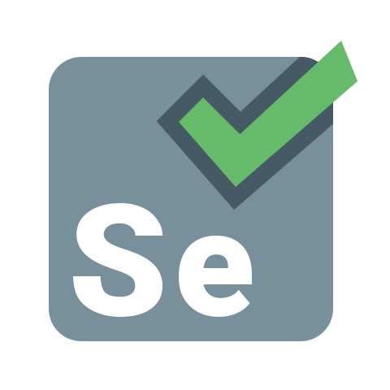
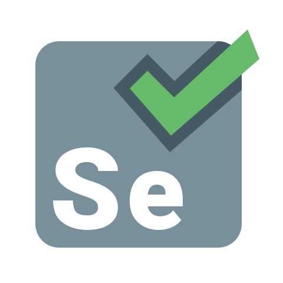

Robo DS.
TimeLine
2021
Time
Squad Itau Unibanco
Ferramentas
Python, Pandas, Selenium e Integração com Sistemas

Sobre
O projeto "Robo DS" é uma solução inovadora que visa automatizar e otimizar o processo de coleta, filtragem e download de contratos de forma eficiente. O projeto envolve a integração de dois sistemas distintos para coletar informações relevantes, aplicar filtros criteriosos aos dados e, posteriormente, interagir com um terceiro sistema por meio de uma API para realizar a baixa da pendencia automática do contrato.
Com essa abordagem eficiente e inteligente, o projeto "Robo DS" economiza tempo e esforços, eliminando tarefas manuais demoradas e propensas a erros. Além disso, a utilização de tecnologias modernas garante a precisão e a confiabilidade dos resultados obtidos, resultando em um processo mais ágil e eficaz para a equipe.
Ferramentas:
 
